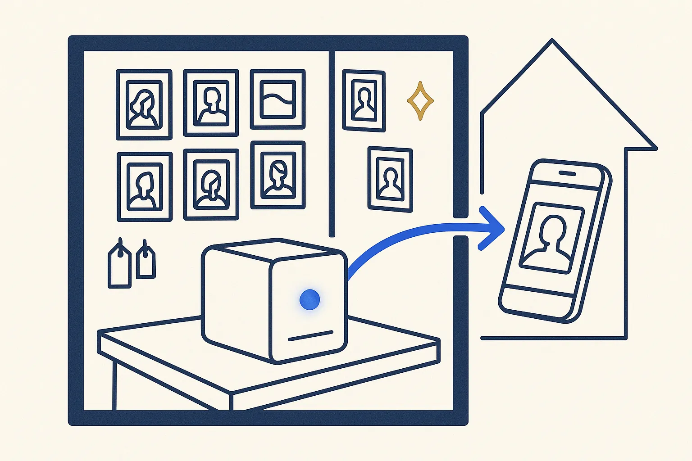
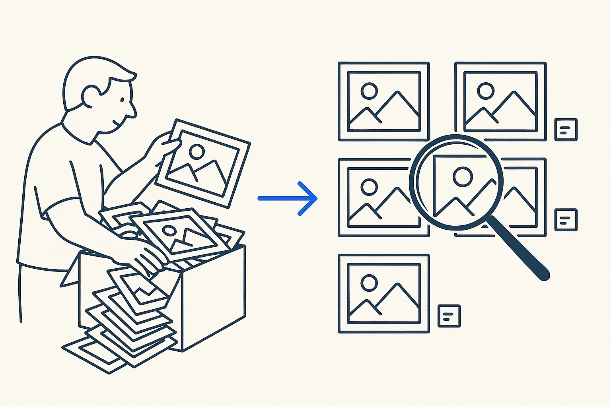
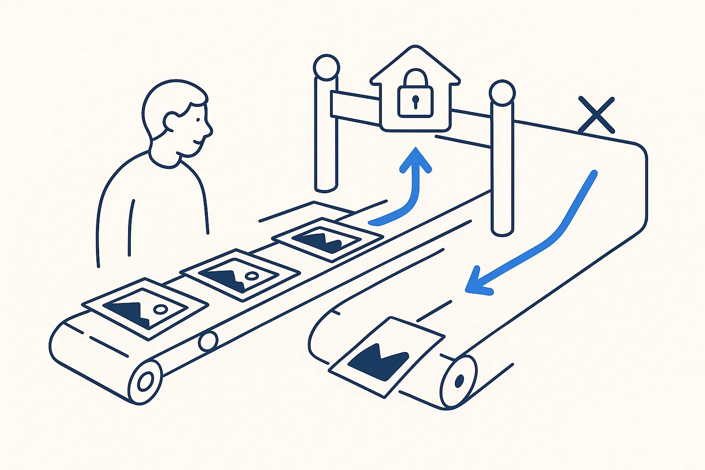
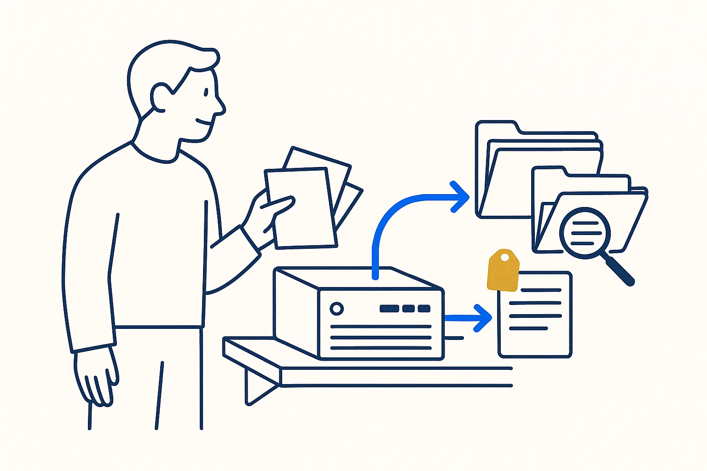

Immich
Self-hosted photo and video library, a Google Photos alternative on your own server. I let it read my photo folders without owning them.
Immich

What it is
Immich is an open-source photo and video library that you run on your own server or NAS. It has the features people know from the big cloud services (a timeline, a map, face and object search, phone backup, shared albums) without your photos leaving the house.
How I use it
Immich only reads my photo folders. The originals and their metadata live in plain files next to the photos (sidecars), and Immich shows them. If I ever replace Immich, the photos, the tags and the descriptions stay exactly where they are.
On a Build Day
The pattern matters more than the product: let a good app look at your files, but never let it become the only place where your data lives.
Watch out
A sidecar file overrides the metadata inside the photo. Decide which of the two is the source before you start tagging.
Links
Concepts behind it
- Rent the AI; Own the Structure — Models are swappable commodities; your structure is the durable asset.
- Own the Layer or Rent the Feature — Every knowledge product answers two questions: who maintains it, and is it a layer of its own or a feature of something else. The answers decide what you can build on.
- One-Way Publishing — You don't sync systems — you publish from one. Sync is where rot starts.
Used in these use cases

Leaving an asset manager that copies everythingAn asset manager that must copy every file into its own library doubles your storage and owns your tags. The way out: tags into files next to the photos, and viewers that only read.
A photo pipeline that knows what is privateEvery new photo is filed by day and activity, gets a metadata file, and is classified private, shared or never-share by rules on its folder — before anything leaves the house.Related articles
- A Proof of Concept Is Not a Product — and That Is the Point
- Red-Team Your Own AI (Before It Just Flatters You) — Structure Beats Magic
- Sidecar Markdown — Giving a PDF the Thing It Can Never Have — Structure Beats Magic
- Context Engineering for One — Structure Beats Magic
How this connects
More in Self-hosted tools

Paperless-ngxPaperless-ngxSelf-hosted document system: scans and PDFs go in, come out searchable, tagged and filed. Invoices and contracts on your own server instead of in a cloud.Read more →SyncthingThe Syncthing FoundationContinuous file sync between your own devices, without a cloud in between. How scans and photos get from my phone to the right folder.Read more →